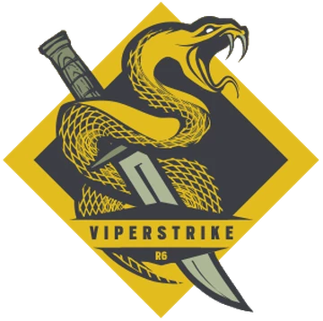

Név:Grace Nam
Születési dátum:1995 Február 2.
Születési hely: Seoul, Dél Korea
“You say potato, I say botnet.”
Nam matematikai és technológiai képességeiért Nemzeti Akadémiai Kiválósági Ösztöndíjat kapott a KAIST-tól (a Koreai Haladó Tudomány és Technológia Intézete). Szolgált a Koreai Köztársaság Hadseregében (ROK), ahol technológiai ügyessége miatt a 5163. Hadseregdandárba osztották be. Vágyva egy esélyre az irodai életből, Nam helyet kapott a 9. Speciális Erők Ezredében, amelyet a "Szellemsereg" néven is ismernek, ahol hegymászást, túlélési technikákat és gerillaháborút tanult. Nagyon alkalmazkodóképes, Nam gyakran alkalmaz kreatív, szokatlan megközelítést az eredmények eléréséhez. Ez a készsége nem maradt észrevétlenül sem az USFK (Egyesült Államok Koreai Hadtest) sem a 707. Speciális Misszió Zászlóalj számára. Bátorítva arra, hogy a védelmek áttörésére és a hálózatok gyengeségeinek kihasználására összpontosítson, Nam gyorsan csatlakozott a 707-hez, és együtt dolgozott a "Vigil" fedőnév alatt ismert Chul Kyung Hwa szakértővel, egészen addig, amíg fel nem vették őket a Rainbow-ba. Nam szorosan együtt dolgozik a "Echo" fedőnevű Masaru Enatsu szakértővel az R&D (Kutatás-fejlesztés) laborban, ahol új ellenintézkedési technológiákat terveznek.
Szervezet: Viperstrike 